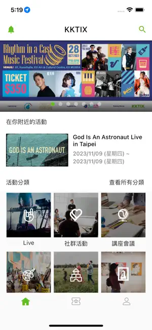

KKTIX 入门：不会繁体字也能玩转的台湾活动购票App
KKTIX 是台湾地区最常用的活动购票平台，从独立音乐、舞台剧到市集都能在这里找到。这篇文章带你从零开始，五分钟就能上手买票、找活动、设开票提醒。
这篇能带你从完全不知道 KKTIX 是什么，到能自己完成一次购票、找到身边好玩的活动——不需要任何基础。
先给你一个生活化类比：去KKTIX官网看看它的样子——它就像是台湾地区的"活动版大众点评 + 票务平台"。你可以把它理解成台湾本地的大麦或者猫眼，但是覆盖的活动类型更偏向独立音乐、艺文展演、市集、讲座这些小众有趣的东西——热门演唱会当然也有，但更多是那种你平时搜不到、只有本地人才知道的小场子演出。它的图标长这样，一个醒目的 K 字加一颗星星。
五分钟上手：从下载到第一次操作
真的五分钟够用，按这个顺序来：
第一步，下载安装。 从官方下载拿安装包或者去应用商店搜 KKTIX 都能找到，安卓和 iOS 都有。装完打开，第一次会问你要不要允许推送通知——建议选允许，后面开票提醒全靠这个。位置权限第一次可以选"使用时允许"，找附近活动会用到。
第二步，注册账号。 打开 App 后点右下角"我的"，然后点登录/注册。最快的方式是用邮箱注册，填个邮箱、设个密码、收个验证码就搞定，比手机号方便（台湾手机号有区号限制）。
第三步，逛一圈。 底部有四个菜单：首页、探索、我的票券、我的。先点首页看看当前有什么热门活动，什么类型都有——演唱会、舞台剧、市集、讲座、工作坊，偶尔还会有电影放映会。不用急着买，先逛逛感受一下风格。
第四步，收藏一个感兴趣的活动。 看到心动但还没开票的演出？进活动详情页，右上角有个星星图标，点一下变成黄色就是收藏成功了。收藏的好处是——开票的时候 App 会推通知给你，不用自己天天刷。
就这四步，五分钟内绝对能完成。接下来就是正式上手玩了。
上手后先玩这三个功能
KKTIX 的功能不少，但前三天你只需要先摸透这三个，其他的慢慢来。
功能一：探索页的"附近活动"——看看身边有什么好玩的
底部菜单点"探索"，然后看页面顶部搜索框旁边有个 📍 小图标，点一下。App 会根据你的 GPS 定位，自动列出你当前位置附近的活动，按距离从近到远排——最近的排在最前面，每个卡片还会标注"2.3 公里""500 公尺"这样的距离数值。
你会发现：台北市区的活动密度真的高，捷运站附近经常有市集或者小型演出；如果你在台中或者高雄，列表会稀疏一点但也够用。点任意一个活动卡片，进去看详情页，里面有时间、地点、票价、活动介绍——场馆名字下面还有个小箭头，点一下能直接在地图 App 里打开导航，不用自己搜地址。

小提醒：如果定位不准，别慌，手动在探索页顶部的城市下拉菜单里选你所在的城市就行，列表会立刻刷新。地下室或者捷运站里 GPS 信号差，走到室外再点一次 📍 图标就能重新定位。
功能二：收藏清单——把感兴趣的活动放一起盯开票
逛 KKTIX 很容易刷到一堆"好想去"但还没开票的活动，这时候收藏就派上用场了。底部菜单"我的"→"我的收藏"，里面按最近添加的顺序排着你收藏过的所有活动，每个卡片显示标题、日期、地点，还有当前状态：即将开票、正在售票、已结束。
关键操作：在收藏清单里找到一个"即将开票"的活动，点进去看，在售票信息区块会有一个"开启开票提醒"的开关——打开它。这样开票时间前 15 分钟，App 会给你推一条通知；如果你错过了那条推送，到点还会再提醒一次。注意哦，只有登录会员的收藏才能收到推送，游客状态的收藏是无效的，所以注册账号这步别跳过。
功能三：购票流程——选位付款到拿到电子票
这个是核心操作。在活动详情页点"立即购票"或者"门票"按钮，跟着流程走：
- 选票种：有些活动有好几个票档，比如早鸟票、预售票、现场票，价格不一样，早鸟通常最便宜但数量有限
- 选位（如果是划位活动）：会弹出座位图，灰色是已售的，白色可选，点你想要的座位变成橙色就是选中了
- 填购票人信息：姓名、身份证号或者护照号，按要求填
- 选付款方式：信用卡是最快的即时到账；如果你在台湾，可以用 ATM 虚拟账号付款——系统会给你生成一个专属银行账号，30 到 60 分钟内带现金去台湾任何一家银行 ATM 转精确金额过去就行，转账后几分钟内自动确认付款成功
- 付款完成后，电子票会直接出现在"我的票券"里，点开就是 QR Code，到现场扫码入场
整个购票流程在手机上不到两分钟就能走完，熟练了更快。选位策略、票种对比这些更细的玩法，可以去kktix文档查。
小白的三个常见疑问
Q1：收藏了就能抢到票吗？
不能。 收藏只是给你发开票提醒，不会帮你锁票量。热门开票（比如大型演唱会）开票瞬间如果手慢，即使提前收藏也可能抢不到。抢票的关键还是：提前登录、提前打开活动页、开票时间到了立刻点购票按钮——别以为收藏了就稳了。
收藏数量目前没有公开上限，实际用下来几十到上百个没问题。已结束的活动不会自动从收藏列表里移除，需要自己手动取消，建议一两个月清理一次过期收藏，保持清单清爽。
Q2：定位不准或者不显示附近活动怎么办？
先检查权限设置：iOS 去"设置 → 隐私与安全性 → 定位服务 → KKTIX → 允许"，Android 去"设置 → 应用 → KKTIX → 权限 → 位置 → 允许"。权限没问题的话，走到室外再点一次探索页顶部的 📍 图标手动触发定位。GPS 信号不好的地方（地下室、捷运隧道里）确实会不准，这时候手动选城市比死磕定位更靠谱。
另外有个容易踩的坑：网站端没有附近活动功能，只有 App 支持。在电脑上只能手动选城市浏览活动列表，别在电脑上找半天定位按钮了——找不到的。
Q3：ATM 虚拟账号付款有什么要注意的？
这个付款方式只在台湾地区能用，有几个硬规则必须记住：
- 必须在截止时间前转完：系统生成虚拟账号时会给一个 30-60 分钟的截止时间，超时账号自动作废，转账的钱也退不回来，需要重新走购票流程生成新的虚拟账号。选了 ATM 付款后，立刻去转账，别中途做别的事。
- 金额必须精确到元：系统靠金额匹配来确认是哪一笔订单，多转少转都可能导致匹配失败，需要人工申诉。
- 只能用实体 ATM：网络银行和手机银行 App 都不支持，转账信息里的银行代码是给 ATM 识别的，网银读不了。
- 手续费不退：台湾银行间 ATM 转账通常收 15-20 新台币手续费，这笔钱不管退票与否都不退还，购票者自己承担。
总结就是：选了 ATM 付款 → 抄下账号信息 → 立刻出门找最近的 ATM → 精确转账 → 等几分钟收邮件通知。别磨蹭。
写在最后
KKTIX 上手真的不难，界面虽然是繁体中文，但逻辑跟其他票务平台一样——逛、收藏、买票、看票。把上面说的三个功能玩熟，基本就能覆盖日常使用了。
进阶方向可以看看搜索功能：点探索页的搜索框，输入艺人名字、关键词或者场馆名，能精准找到你想看的特定活动；还有邀请码功能，如果你是活动主办者或者组织者，可以用它给媒体、VIP、讲者发专属的报名/购票入口，限量、自动打标签、优先购票权都能设置——不过那是主办者端的事，普通买票用户暂时不用管。
先把 App 装上逛一圈吧，说不定就能发现身边一直想找的那个小场子演出。
关于这套资料的多个仓库备份：整理好的文档内容在三个仓库都有同步——GitHub主仓、Gitee镜像、GitCode镜像，方便不同地区的开发者按需访问。